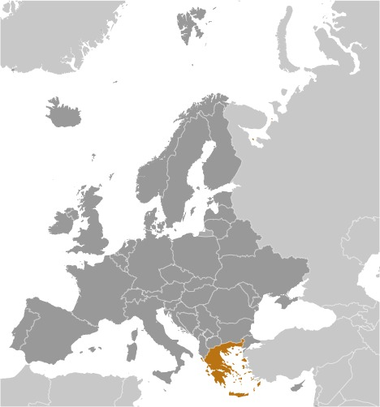
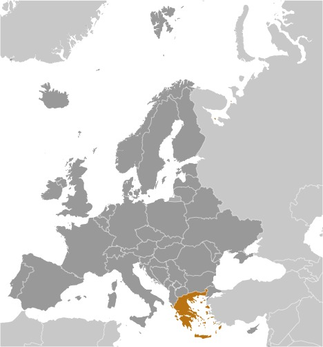

-
Introduction :: Greece
-
Background:Greece achieved independence from the Ottoman Empire in 1830. During the second half of the 19th century and the first half of the 20th century, it gradually added neighboring islands and territories, most with Greek-speaking populations. In World War II, Greece was first invaded by Italy (1940) and subsequently occupied by Germany (1941-44); fighting endured in a protracted civil war between supporters of the king and other anti-communist and communist rebels. Following the latter's defeat in 1949, Greece joined NATO in 1952. In 1967, a group of military officers seized power, establishing a military dictatorship that suspended many political liberties and forced the king to flee the country. In 1974 following the collapse of the dictatorship, democratic elections and a referendum created a parliamentary republic and abolished the monarchy. In 1981, Greece joined the EC (now the EU); it became the 12th member of the European Economic and Monetary Union (EMU) in 2001. Greece has suffered a severe economic crisis since late 2009, due to nearly a decade of chronic overspending and structural rigidities. Beginning in 2010, Greece entered three bailout agreements - with the European Commission, the European Central Bank (ECB), the IMF, and the third in 2015 with the European Stability Mechanism (ESM) - worth in total about $300 billion. The Greek Government formally exited the third bailout in August 2018.
-
Geography :: Greece
-
Location:Southern Europe, bordering the Aegean Sea, Ionian Sea, and the Mediterranean Sea, between Albania and TurkeyGeographic coordinates:39 00 N, 22 00 EMap references:EuropeArea:total: 131,957 sq kmland: 130,647 sq kmwater: 1,310 sq kmcountry comparison to the world: 97Area - comparative:slightly smaller than AlabamaArea comparison map:
 The World Factbook Field Image ModalEurope :: Greece Print
The World Factbook Field Image ModalEurope :: Greece Print Image Description
Image Descriptionslightly smaller than Alabama
Land boundaries:total: 1,110 kmborder countries (4): Albania 212 km, Bulgaria 472 km, Macedonia 234 km, Turkey 192 kmCoastline:13,676 kmMaritime claims:territorial sea: 12 nmcontinental shelf: 200-m depth or to the depth of exploitationClimate:temperate; mild, wet winters; hot, dry summersTerrain:mountainous with ranges extending into the sea as peninsulas or chains of islandsElevation:mean elevation: 498 mlowest point: Mediterranean Sea 0 mhighest point: Mount Olympus 2,917note: Mount Olympus actually has 52 peaks but its highest point, Mytikas (meaning "nose"), rises to 2,917 meters; in Greek mythology, Olympus' Mytikas peak was the home of the Greek godsNatural resources:lignite, petroleum, iron ore, bauxite, lead, zinc, nickel, magnesite, marble, salt, hydropower potentialLand use:agricultural land: 63.4% (2011 est.)arable land: 19.7% (2011 est.) / permanent crops: 8.9% (2011 est.) / permanent pasture: 34.8% (2011 est.)forest: 30.5% (2011 est.)other: 6.1% (2011 est.)Irrigated land:15,550 sq km (2012)Population distribution:one-third of the population lives in and around metropolitan Athens; the remainder of the country has moderate population density mixed with sizeable urban clustersNatural hazards:severe earthquakes
volcanism: Santorini (367 m) has been deemed a Decade Volcano by the International Association of Volcanology and Chemistry of the Earth's Interior, worthy of study due to its explosive history and close proximity to human populations; although there have been very few eruptions in recent centuries, Methana and Nisyros in the Aegean are classified as historically active
Environment - current issues:air pollution; air emissions from transport and electricity power stations; water pollution; degradation of coastal zones; loss of biodiversity in terrestrial and marine ecosystems; increasing municipal and industrial wasteEnvironment - international agreements:party to: Air Pollution, Air Pollution-Nitrogen Oxides, Air Pollution-Sulfur 94, Antarctic-Environmental Protocol, Antarctic-Marine Living Resources, Antarctic Treaty, Biodiversity, Climate Change, Climate Change-Kyoto Protocol, Desertification, Endangered Species, Environmental Modification, Hazardous Wastes, Law of the Sea, Marine Dumping, Ozone Layer Protection, Ship Pollution, Tropical Timber 83, Tropical Timber 94, Wetlandssigned, but not ratified: Air Pollution-Persistent Organic Pollutants, Air Pollution-Volatile Organic CompoundsGeography - note:strategic location dominating the Aegean Sea and southern approach to Turkish Straits; a peninsular country, possessing an archipelago of about 2,000 islands -
People and Society :: Greece
-
Population:10,607,051 (July 2020 est.)country comparison to the world: 86Nationality:noun: Greek(s)adjective: GreekEthnic groups:Greek 91.6%, Albanian 4.4%, other 4% (2011)
note: data represent citizenship; Greece does not collect data on ethnicity
Languages:Greek (official) 99%, other (includes English and French) 1%Religions:Greek Orthodox (official) 81-90%, Muslim 2%, other 3%, none 4-15%, unspecified 1% (2015 est.)Age structure:0-14 years: 14.53% (male 794,918/female 745,909)15-24 years: 10.34% (male 577,134/female 519,819)25-54 years: 39.6% (male 2,080,443/female 2,119,995)55-64 years: 13.1% (male 656,404/female 732,936)65 years and over: 22.43% (male 1,057,317/female 1,322,176) (2020 est.)population pyramid: The World Factbook Field Image ModalEurope :: Greece Print
The World Factbook Field Image ModalEurope :: Greece Print Image DescriptionThis is the population pyramid for Greece. A population pyramid illustrates the age and sex structure of a country's population and may provide insights about political and social stability, as well as economic development. The population is distributed along the horizontal axis, with males shown on the left and females on the right. The male and female populations are broken down into 5-year age groups represented as horizontal bars along the vertical axis, with the youngest age groups at the bottom and the oldest at the top. The shape of the population pyramid gradually evolves over time based on fertility, mortality, and international migration trends.
Image DescriptionThis is the population pyramid for Greece. A population pyramid illustrates the age and sex structure of a country's population and may provide insights about political and social stability, as well as economic development. The population is distributed along the horizontal axis, with males shown on the left and females on the right. The male and female populations are broken down into 5-year age groups represented as horizontal bars along the vertical axis, with the youngest age groups at the bottom and the oldest at the top. The shape of the population pyramid gradually evolves over time based on fertility, mortality, and international migration trends.
For additional information, please see the entry for Population pyramid on the Definitions and Notes page under the References tab.Dependency ratios:total dependency ratio: 56.1youth dependency ratio: 21.3elderly dependency ratio: 34.8potential support ratio: 2.9 (2020 est.)Median age:total: 45.3 yearsmale: 43.7 yearsfemale: 46.8 years (2020 est.)country comparison to the world: 9Population growth rate:-0.31% (2020 est.)country comparison to the world: 219Birth rate:7.8 births/1,000 population (2020 est.)country comparison to the world: 224Death rate:12 deaths/1,000 population (2020 est.)country comparison to the world: 17Net migration rate:0.9 migrant(s)/1,000 population (2020 est.)country comparison to the world: 60Population distribution:one-third of the population lives in and around metropolitan Athens; the remainder of the country has moderate population density mixed with sizeable urban clustersUrbanization:urban population: 79.7% of total population (2020)rate of urbanization: 0.22% annual rate of change (2015-20 est.)total population growth rate v. urban population growth rate, 2000-2030: PDFMajor urban areas - population:3.153 million ATHENS (capital), 812,000 Thessaloniki (2020)Sex ratio:at birth: 1.07 male(s)/female0-14 years: 1.07 male(s)/female15-24 years: 1.11 male(s)/female25-54 years: 0.98 male(s)/female55-64 years: 0.9 male(s)/female65 years and over: 0.8 male(s)/femaletotal population: 0.95 male(s)/female (2020 est.)Mother's mean age at first birth:29.9 years (2017 est.)Maternal mortality rate:3 deaths/100,000 live births (2017 est.)country comparison to the world: 178Infant mortality rate:total: 3.7 deaths/1,000 live birthsmale: 4 deaths/1,000 live birthsfemale: 3.3 deaths/1,000 live births (2020 est.)country comparison to the world: 193Life expectancy at birth:total population: 81.1 yearsmale: 78.5 yearsfemale: 83.8 years (2020 est.)country comparison to the world: 38Total fertility rate:1.38 children born/woman (2020 est.)country comparison to the world: 216Drinking water source:improved: urban: 100% of populationrural: 100% of populationtotal: 100% of populationunimproved: urban: 0% of populationrural: 0% of populationtotal: 0% of population (2017 est.)Current Health Expenditure:8% (2017)Physicians density:5.48 physicians/1,000 population (2017)Hospital bed density:4.2 beds/1,000 population (2017)Sanitation facility access:improved: urban: 100% of populationrural: 100% of populationtotal: 100% of populationunimproved: urban: 0% of populationrural: 0% of populationtotal: 0% of population (2017 est.)HIV/AIDS - adult prevalence rate:0.2% (2017 est.)country comparison to the world: 97HIV/AIDS - people living with HIV/AIDS:14,000 (2017 est.)country comparison to the world: 93HIV/AIDS - deaths:<100 (2017 est.)Obesity - adult prevalence rate:24.9% (2016)country comparison to the world: 54Education expenditures:NALiteracy:definition: age 15 and over can read and writetotal population: 97.7%male: 98.5%female: 96.9% (2015)School life expectancy (primary to tertiary education):total: 20 yearsmale: 20 yearsfemale: 20 years (2018)Unemployment, youth ages 15-24:total: 39.9%male: 36.4%female: 43.9% (2018 est.)country comparison to the world: 11 -
Government :: Greece
-
Country name:conventional long form: Hellenic Republicconventional short form: Greecelocal long form: Elliniki Dimokratialocal short form: Ellas or Elladaformer: Hellenic State, Kingdom of Greeceetymology: the English name derives from the Roman (Latin) designation "Graecia," meaning "Land of the Greeks"; the Greeks call their country "Hellas" or "Ellada"Government type:parliamentary republicCapital:name: Athensgeographic coordinates: 37 59 N, 23 44 Etime difference: UTC+2 (7 hours ahead of Washington, DC, during Standard Time)daylight saving time: +1hr, begins last Sunday in March; ends last Sunday in Octoberetymology: Athens is the oldest European capital city; according to tradition, the city is named after Athena, the Greek goddess of wisdom; in actuality, the appellation probably derives from a lost name in a pre-Hellenic languageAdministrative divisions:13 regions (perifereies, singular - perifereia) and 1 autonomous monastic state* (aftonomi monastiki politeia); Agion Oros* (Mount Athos), Anatoliki Makedonia kai Thraki (East Macedonia and Thrace), Attiki (Attica), Dytiki Ellada (West Greece), Dytiki Makedonia (West Macedonia), Ionia Nisia (Ionian Islands), Ipeiros (Epirus), Kentriki Makedonia (Central Macedonia), Kriti (Crete), Notio Aigaio (South Aegean), Peloponnisos (Peloponnese), Sterea Ellada (Central Greece), Thessalia (Thessaly), Voreio Aigaio (North Aegean)Independence:3 February 1830 (from the Ottoman Empire); note - 25 March 1821, outbreak of the national revolt against the Ottomans; 3 February 1830, signing of the London Protocol recognizing Greek independence by Great Britain, France, and RussiaNational holiday:Independence Day, 25 March (1821)Constitution:history: many previous; latest entered into force 11 June 1975amendments: proposed by at least 50 members of Parliament and agreed by three-fifths majority vote in two separate ballots at least 30 days apart; passage requires absolute majority vote by the next elected Parliament; entry into force finalized through a "special parliamentary resolution"; articles on human rights and freedoms and the form of government cannot be amended; amended 1986, 2001, 2008Legal system:civil legal system based on Roman lawInternational law organization participation:accepts compulsory ICJ jurisdiction with reservations; accepts ICCt jurisdictionCitizenship:citizenship by birth: nocitizenship by descent only: at least one parent must be a citizen of Greecedual citizenship recognized: yesresidency requirement for naturalization: 10 yearsSuffrage:17 years of age; universal and compulsoryExecutive branch:chief of state: President Ekaterini SAKELLAROPOULOU (since 13 March 2020)head of government: Prime Minister Kyriakos MITSOTAKIS (since 8 July 2019)cabinet: Cabinet appointed by the president on the recommendation of the prime ministerelections/appointments: president elected by Hellenic Parliament for a 5-year term (eligible for a second term); election last held on 22 January 2020 (next to be held by February 2025); president appoints as prime minister the leader of the majority party or coalition in the Hellenic Parliamentelection results: Katerina SAKELLAROPOULOU (independent) elected president by Parliament - 261 of 300 votes; note - SAKELLAROPOULOU is Greece's first woman presidentLegislative branch:description: unicameral Hellenic Parliament or Vouli ton Ellinon (300 seats; 280 members in multi-seat constituencies and 12 members in a single nationwide constituency directly elected by open party-list proportional representation vote; 8 members in single-seat constituencies elected by simple majority vote; members serve up to 4 years); note - only parties surpassing a 3% threshold are entitled to parliamentary seats; parties need 10 seats to become formal parliamentary groups but can retain that status if the party participated in the last election and received the minimum 3% thresholdelections: last held on 7 July 2019 (next to be held by July 2023)election results: percent of vote by party - ND 39.9%, SYRIZA 31.5%, KINAL 8.1%, KKE 5.3%, Greek Solution 3.7%, MeRA25 3.4%, other 8.1%; seats by party - ND 158, SYRIZA 86, KINAL 22, KKE 15, Greek Solution 10, MeRA25 9; composition - men 244, women 56, percent of women 18.7%Judicial branch:highest courts: Supreme Civil and Criminal Court or Areios Pagos (consists of 56 judges, including the court presidents); Council of State (supreme administrative court) (consists of the president, 7 vice presidents, 42 privy councilors, 48 associate councilors and 50 reporting judges, organized into six 5- and 7-member chambers; Court of Audit (government audit and enforcement) consists of the president, 5 vice presidents, 20 councilors, and 90 associate and reporting judgesjudge selection and term of office: Supreme Court judges appointed by presidential decree on the advice of the Supreme Judicial Council (SJC), which includes the president of the Supreme Court, other judges, and the prosecutor of the Supreme Court; judges appointed for life following a 2-year probationary period; Council of State president appointed by the Greek Cabinet to serve a 4-year term; other judge appointments and tenure NA; Court of Audit president appointed by decree of the president of the republic on the advice of the SJC; court president serves a 4-year term or until age 67; tenure of vice presidents, councilors, and judges NAsubordinate courts: Courts of Appeal and Courts of First Instance (district courts)Political parties and leaders:Anticapitalist Left Cooperation for the Overthrow or ANTARSYA [collective leadership]
Coalition of the Radical Left or SYRIZA [Alexios (Alexis) TSIPRAS]
Communist Party of Greece or KKE [Dimitrios KOUTSOUMBAS]
Democratic Left or DIMAR [Athanasios (Thanasis) THEOCHAROPOULOS]
European Realistic Disobedience Front or MeRA25 [Yanis VAROUFAKIS]
Greek Solution [Kyriakos VELOPOULOS]
Independent Greeks or ANEL [Panagiotis (Panos) KAMMENOS]
Movement for Change or KINAL [Foteini (Fofi) GENIMMATA]
New Democracy or ND [Kyriakos MITSOTAKIS]
People's Association-Golden Dawn [Nikolaos MICHALOLIAKOS]
Popular Unity or LAE [Panagiotis LAFAZANIS]
The River (To Potami) [Stavros THEODORAKIS]
Union of Centrists or EK [Vasileios (Vasilis) LEVENTIS]International organization participation:Australia Group, BIS, BSEC, CD, CE, CERN, EAPC, EBRD, ECB, EIB, EMU, ESA, EU, FAO, FATF, IAEA, IBRD, ICAO, ICC (national committees), ICCt, ICRM, IDA, IEA, IFAD, IFC, IFRCS, IGAD (partners), IHO, ILO, IMF, IMO, IMSO, Interpol, IOC, IOM, IPU, ISO, ITSO, ITU, ITUC (NGOs), MIGA, NATO, NEA, NSG, OAS (observer), OECD, OIF, OPCW, OSCE, PCA, Schengen Convention, SELEC, UN, UNCTAD, UNESCO, UNHCR, UNIDO, UNIFIL, UNWTO, UPU, WCO, WFTU (NGOs), WHO, WIPO, WMO, WTO, ZCDiplomatic representation in the US:chief of mission: Ambassador Theocharis LALAKOS (since 27 June 2016)chancery: 2217 Massachusetts Avenue NW, Washington, DC 20008telephone: [1] (202) 939-1300FAX: [1] (202) 939-1324consulate(s) general: Boston, Chicago, Los Angeles, New York, Tampa (FL), San Franciscoconsulate(s): Atlanta, HoustonDiplomatic representation from the US:chief of mission: Ambassador Geoffrey R. PYATT (since 24 October 2016)telephone: [30] (210) 721-2951embassy: 91 Vasillisis Sophias Avenue, 10160 Athensmailing address: PSC 108, APO AE 09842-0108FAX: [30] (210) 645-6282consulate(s) general: ThessalonikiFlag description:nine equal horizontal stripes of blue alternating with white; a blue square bearing a white cross appears in the upper hoist-side corner; the cross symbolizes Greek Orthodoxy, the established religion of the country; there is no agreed upon meaning for the nine stripes or for the colorsnote: Greek legislation states that the flag colors are cyan and white, but cyan can mean "blue" in Greek, so the exact shade of blue has never been set and has varied from a light to a dark blue over time; in general, the hue of blue normally encountered is a form of azure
National symbol(s):Greek cross (white cross on blue field, arms equal length); national colors: blue, whiteNational anthem:name: "Ymnos eis tin Eleftherian" (Hymn to Liberty)lyrics/music: Dionysios SOLOMOS/Nikolaos MANTZAROSnote: adopted 1864; the anthem is based on a 158-stanza poem by the same name, which was inspired by the Greek Revolution of 1821 against the Ottomans (only the first two stanzas are used); Cyprus also uses "Hymn to Liberty" as its anthem
-
Economy :: Greece
-
Economic overview:
Greece has a capitalist economy with a public sector accounting for about 40% of GDP and with per capita GDP about two-thirds that of the leading euro-zone economies. Tourism provides 18% of GDP. Immigrants make up nearly one-fifth of the work force, mainly in agricultural and unskilled jobs. Greece is a major beneficiary of EU aid, equal to about 3.3% of annual GDP.
The Greek economy averaged growth of about 4% per year between 2003 and 2007, but the economy went into recession in 2009 as a result of the world financial crisis, tightening credit conditions, and Athens' failure to address a growing budget deficit. By 2013, the economy had contracted 26%, compared with the pre-crisis level of 2007. Greece met the EU's Growth and Stability Pact budget deficit criterion of no more than 3% of GDP in 2007-08, but violated it in 2009, when the deficit reached 15% of GDP. Deteriorating public finances, inaccurate and misreported statistics, and consistent underperformance on reforms prompted major credit rating agencies to downgrade Greece's international debt rating in late 2009 and led the country into a financial crisis. Under intense pressure from the EU and international market participants, the government accepted a bailout program that called on Athens to cut government spending, decrease tax evasion, overhaul the civil-service, health-care, and pension systems, and reform the labor and product markets. Austerity measures reduced the deficit to 1.3% in 2017. Successive Greek governments, however, failed to push through many of the most unpopular reforms in the face of widespread political opposition, including from the country's powerful labor unions and the general public.
In April 2010, a leading credit agency assigned Greek debt its lowest possible credit rating, and in May 2010, the IMF and euro-zone governments provided Greece emergency short- and medium-term loans worth $147 billion so that the country could make debt repayments to creditors. Greece, however, struggled to meet the targets set by the EU and the IMF, especially after Eurostat - the EU's statistical office - revised upward Greece's deficit and debt numbers for 2009 and 2010. European leaders and the IMF agreed in October 2011 to provide Athens a second bailout package of $169 billion. The second deal called for holders of Greek government bonds to write down a significant portion of their holdings to try to alleviate Greece’s government debt burden. However, Greek banks, saddled with a significant portion of sovereign debt, were adversely affected by the write down and $60 billion of the second bailout package was set aside to ensure the banking system was adequately capitalized.
In 2014, the Greek economy began to turn the corner on the recession. Greece achieved three significant milestones: balancing the budget - not including debt repayments; issuing government debt in financial markets for the first time since 2010; and generating 0.7% GDP growth — the first economic expansion since 2007.
Despite the nascent recovery, widespread discontent with austerity measures helped propel the far-left Coalition of the Radical Left (SYRIZA) party into government in national legislative elections in January 2015. Between January and July 2015, frustrations grew between the SYRIZA-led government and Greece’s EU and IMF creditors over the implementation of bailout measures and disbursement of funds. The Greek government began running up significant arrears to suppliers, while Greek banks relied on emergency lending, and Greece’s future in the euro zone was called into question. To stave off a collapse of the banking system, Greece imposed capital controls in June 2015, then became the first developed nation to miss a loan payment to the IMF, rattling international financial markets. Unable to reach an agreement with creditors, Prime Minister Alexios TSIPRAS held a nationwide referendum on 5 July on whether to accept the terms of Greece’s bailout, campaigning for the ultimately successful "no" vote. The TSIPRAS government subsequently agreed, however, to a new $96 billion bailout in order to avert Greece’s exit from the monetary bloc. On 20 August 2015, Greece signed its third bailout, allowing it to cover significant debt payments to its EU and IMF creditors and to ensure the banking sector retained access to emergency liquidity. The TSIPRAS government — which retook office on 20 September 2015 after calling new elections in late August — successfully secured disbursal of two delayed tranches of bailout funds. Despite the economic turmoil, Greek GDP did not contract as sharply as feared, boosted in part by a strong tourist season.
In 2017, Greece saw improvements in GDP and unemployment. Unfinished economic reforms, a massive non-performing loan problem, and ongoing uncertainty regarding the political direction of the country hold the economy back. Some estimates put Greece’s black market at 20- to 25% of GDP, as more people have stopped reporting their income to avoid paying taxes that, in some cases, have risen to 70% of an individual’s gross income.
GDP real growth rate:1.87% (2019 est.)1.91% (2018 est.)1.44% (2017 est.)country comparison to the world: 145Inflation rate (consumer prices):0.2% (2019 est.)0.6% (2018 est.)1.1% (2017 est.)country comparison to the world: 28Credit ratings:Fitch rating: BB (2020)Moody's rating: Ba3 (2020)Standard & Poors rating: BB- (2019)GDP (purchasing power parity) - real:$269.002 billion (2019 est.)$264.069 billion (2018 est.)$259.117 billion (2017 est.)note: data are in 2010 dollars
GDP (official exchange rate):$209.79 billion (2019 est.)GDP - per capita (PPP):$24,588 (2019 est.)$24,025 (2018 est.)$23,470 (2017 est.)note: data are in 2010 dollars
country comparison to the world: 63Gross national saving:10.9% of GDP (2017 est.)9.5% of GDP (2016 est.)9.6% of GDP (2015 est.)country comparison to the world: 159GDP - composition, by sector of origin:agriculture: 4.1% (2017 est.)industry: 16.9% (2017 est.)services: 79.1% (2017 est.)GDP - composition, by end use:household consumption: 69.6% (2017 est.)government consumption: 20.1% (2017 est.)investment in fixed capital: 12.5% (2017 est.)investment in inventories: -1% (2017 est.)exports of goods and services: 33.4% (2017 est.)imports of goods and services: -34.7% (2017 est.)Ease of Doing Business Index scores:68.4 (2020)Agriculture - products:wheat, corn, barley, sugar beets, olives, tomatoes, wine, tobacco, potatoes; beef, dairy productsIndustries:tourism, food and tobacco processing, textiles, chemicals, metal products; mining, petroleumIndustrial production growth rate:3.5% (2017 est.)country comparison to the world: 85Labor force:4 million (2020 est.)country comparison to the world: 90Labor force - by occupation:agriculture: 12.6%industry: 15%services: 72.4% (30 October 2015 est.)Unemployment rate:17.3% (2019 est.)19.34% (2018 est.)country comparison to the world: 183Population below poverty line:36% (2014 est.)Budget:revenues: 97.99 billion (2017 est.)expenditures: 96.35 billion (2017 est.)Taxes and other revenues:48.8% (of GDP) (2017 est.)country comparison to the world: 17Budget surplus (+) or deficit (-):0.8% (of GDP) (2017 est.)country comparison to the world: 36Public debt:181.8% of GDP (2017 est.)183.5% of GDP (2016 est.)country comparison to the world: 2Fiscal year:calendar yearCurrent account balance:-$3.114 billion (2019 est.)-$6.245 billion (2018 est.)country comparison to the world: 175Exports:$92.925 billion (2019 est.)$88.511 billion (2018 est.)$81.196 billion (2017 est.)country comparison to the world: 48Exports - partners:Italy 10.6%, Germany 7.1%, Turkey 6.8%, Cyprus 6.5%, Bulgaria 4.9%, Lebanon 4.3% (2017)Exports - commodities:food and beverages, manufactured goods, petroleum products, chemicals, textilesImports:$94.597 billion (2019 est.)$91.798 billion (2018 est.)$85.092 billion (2017 est.)country comparison to the world: 48Imports - commodities:machinery, transport equipment, fuels, chemicalsImports - partners:Germany 10.4%, Italy 8.2%, Russia 6.8%, Iraq 6.3%, South Korea 6.1%, China 5.4%, Netherlands 5.3%, France 4.3% (2017)Reserves of foreign exchange and gold:$7.807 billion (31 December 2017 est.)$6.026 billion (31 December 2015 est.)country comparison to the world: 80Debt - external:$506.6 billion (31 March 2016 est.)$468.2 billion (31 March 2015 est.)country comparison to the world: 23Exchange rates:euros (EUR) per US dollar -0.82771 (2020 est.)0.90338 (2019 est.)0.87789 (2018 est.)0.885 (2014 est.)0.7634 (2013 est.) -
Energy :: Greece
-
Electricity access:electrification - total population: 100% (2020)Electricity - production:52.05 billion kWh (2016 est.)country comparison to the world: 53Electricity - consumption:56.89 billion kWh (2016 est.)country comparison to the world: 45Electricity - exports:1.037 billion kWh (2016 est.)country comparison to the world: 58Electricity - imports:9.833 billion kWh (2016 est.)country comparison to the world: 27Electricity - installed generating capacity:19.17 million kW (2016 est.)country comparison to the world: 46Electricity - from fossil fuels:57% of total installed capacity (2016 est.)country comparison to the world: 136Electricity - from nuclear fuels:0% of total installed capacity (2017 est.)country comparison to the world: 98Electricity - from hydroelectric plants:14% of total installed capacity (2017 est.)country comparison to the world: 105Electricity - from other renewable sources:29% of total installed capacity (2017 est.)country comparison to the world: 19Crude oil - production:4,100 bbl/day (2018 est.)country comparison to the world: 80Crude oil - exports:3,229 bbl/day (2017 est.)country comparison to the world: 67Crude oil - imports:484,300 bbl/day (2017 est.)country comparison to the world: 20Crude oil - proved reserves:10 million bbl (1 January 2018 est.)country comparison to the world: 90Refined petroleum products - production:655,400 bbl/day (2017 est.)country comparison to the world: 28Refined petroleum products - consumption:304,100 bbl/day (2017 est.)country comparison to the world: 43Refined petroleum products - exports:371,900 bbl/day (2017 est.)country comparison to the world: 22Refined petroleum products - imports:192,200 bbl/day (2017 est.)country comparison to the world: 35Natural gas - production:8 million cu m (2017 est.)country comparison to the world: 93Natural gas - consumption:4.927 billion cu m (2017 est.)country comparison to the world: 61Natural gas - exports:0 cu m (2017 est.)country comparison to the world: 112Natural gas - imports:4.984 billion cu m (2017 est.)country comparison to the world: 36Natural gas - proved reserves:991.1 million cu m (1 January 2018 est.)country comparison to the world: 100Carbon dioxide emissions from consumption of energy:69.37 million Mt (2017 est.)country comparison to the world: 51
-
Communications :: Greece
-
Telephones - fixed lines:total subscriptions: 5,080,386subscriptions per 100 inhabitants: 47.75 (2019 est.)country comparison to the world: 29Telephones - mobile cellular:total subscriptions: 12,070,571subscriptions per 100 inhabitants: 113.45 (2019 est.)country comparison to the world: 75Telecommunication systems:general assessment: good mobile telephone and international services; 3 mobile network operators; broadband penetration developing steadily despite rough economic conditions; plans to repurpose 3G network for LTE and 5G by 2022 (2020)domestic: microwave radio relay trunk system; extensive open-wire connections; submarine cable to offshore islands; 48 per 100 for fixed-line and 114 per 100 for mobile-cellular (2019)international: country code - 30; landing points for the SEA-ME-WE-3, Adria-1, Italy-Greece 1, OTEGLOBE, MedNautilus Submarine System, Aphrodite 2, AAE-1 and Silphium optical telecommunications submarine cable that provides links to Europe, the Middle East, Africa, Southeast Asia, Asia and Australia; tropospheric scatter; satellite earth stations - 4 (2 Intelsat - 1 Atlantic Ocean and 1 Indian Ocean, 1 Eutelsat, and 1 Inmarsat - Indian Ocean region) (2019)note: the COVID-19 outbreak is negatively impacting telecommunications production and supply chains globally; consumer spending on telecom devices and services has also slowed due to the pandemic's effect on economies worldwide; overall progress towards improvements in all facets of the telecom industry - mobile, fixed-line, broadband, submarine cable and satellite - has moderatedBroadcast media:broadcast media dominated by the private sector; roughly 150 private TV channels, about 10 of which broadcast nationwide; 1 government-owned terrestrial TV channel with national coverage; 3 privately owned satellite channels; multi-channel satellite and cable TV services available; upwards of 1,500 radio stations, all of them privately owned; government-owned broadcaster has 2 national radio stationsInternet country code:.grInternet users:total: 7,783,381percent of population: 72.95% (July 2018 est.)country comparison to the world: 61Broadband - fixed subscriptions:total: 3,961,864subscriptions per 100 inhabitants: 37 (2018 est.)country comparison to the world: 35
-
Transportation :: Greece
-
National air transport system:number of registered air carriers: 11 (2020)inventory of registered aircraft operated by air carriers: 97annual passenger traffic on registered air carriers: 15,125,933 (2018)annual freight traffic on registered air carriers: 21.91 million mt-km (2018)Civil aircraft registration country code prefix:SX (2016)Airports:77 (2013)country comparison to the world: 69Airports - with paved runways:total: 68 (2017)over 3,047 m: 6 (2017)2,438 to 3,047 m: 15 (2017)1,524 to 2,437 m: 19 (2017)914 to 1,523 m: 18 (2017)under 914 m: 10 (2017)Airports - with unpaved runways:total: 9 (2013)914 to 1,523 m: 2 (2013)under 914 m: 7 (2013)Heliports:9 (2013)Pipelines:1329 km gas, 94 km oil (2013)Railways:total: 2,548 km (2014)standard gauge: 1,565 km 1.435-m gauge (764 km electrified) (2014)narrow gauge: 961 km 1.000-m gauge (2014)22 0.750-m gaugecountry comparison to the world: 67Roadways:total: 117,000 km (2018)country comparison to the world: 42Waterways:6 km (the 6-km-long Corinth Canal crosses the Isthmus of Corinth; it shortens a sea voyage by 325 km) (2012)country comparison to the world: 106Merchant marine:total: 1,308by type: bulk carrier 180, container ship 6, general cargo 95, oil tanker 375, other 652 (2019)country comparison to the world: 22Ports and terminals:major seaport(s): Aspropyrgos, Pachi, Piraeus, Thessalonikioil terminal(s): Agioi Theodoroicontainer port(s) (TEUs): Piraeus (4,145,079) (2017)LNG terminal(s) (import): Revithoussa
-
Military and Security :: Greece
-
Military and security forces:Hellenic Armed Forces: Hellenic Army (Ellinikos Stratos, ES; includes National Guard reserves), Hellenic Navy (Elliniko Polemiko Navtiko, EPN), Hellenic Air Force (Elliniki Polemiki Aeroporia, EPA; includes air defense) (2019)Military expenditures:2.28% of GDP (2019 est.)2.48% of GDP (2018)2.34% of GDP (2017)2.38% of GDP (2016)2.3% of GDP (2015)country comparison to the world: 41Military and security service personnel strengths:the Hellenic Armed Forces have approximately 141,000 active duty personnel (90,000 Army; 16,000 Navy; 25,000 Air Force; 10,000 joint service, support, staff); approximately 35,000 National Guard (2019 est.)Military equipment inventories and acquisitions:the inventory of the Hellenic Armed Forces consists mostly of a mix of imported weapons from Europe and the US, as well as a limited number of domestically produced systems, particularly naval vessels; Germany is the leading supplier of weapons systems to Greece since 2010, followed by France and the US; Greece's defense industry is capable of producing naval vessels and associated subsystems (2019 est.)Military deployments:est. 1,000 Cyprus; 110 Kosovo (NATO); 140 Lebanon (UNIFIL) (2020)Military service age and obligation:19-45 years of age for compulsory military service; during wartime the law allows for recruitment beginning January of the year of inductee's 18th birthday, thus including 17 year olds; 18 years of age for volunteers; conscript service obligation is 1 year for the Army and 9 months for the Air Force and Navy; women are eligible for voluntary military service (2014)
-
Terrorism :: Greece
-
Terrorist group(s):Islamic State of Iraq and ash-Sham (ISIS); Revolutionary Struggle (2019)note: details about the history, aims, leadership, organization, areas of operation, tactics, targets, weapons, size, and sources of support of the group(s) appear(s) in Appendix-T
-
Transnational Issues :: Greece
-
Disputes - international:
Greece and Turkey continue discussions to resolve their complex maritime, air, territorial, and boundary disputes in the Aegean Sea; the mass migration of unemployed Albanians still remains a problem for developed countries, chiefly Greece and Italy
Refugees and internally displaced persons:refugees (country of origin): 26,696 (Syria), 17,685 (Afghanistan), 9,614 (Afghanistan) (2019)stateless persons: 4,734 (2019)note: 1,204,745 estimated refugee and migrant arrivals (January 2015-November 2020); as of the end of December 2019, an estimated 112,300 migrants and refugees were stranded in Greece since 2015-16; 50,215 migrant arrivals in 2018
Illicit drugs:a gateway to Europe for traffickers smuggling cannabis and heroin from the Middle East and Southwest Asia to the West and precursor chemicals to the East; some South American cocaine transits or is consumed in Greece; money laundering related to drug trafficking and organized crime
Europe ::
Greece